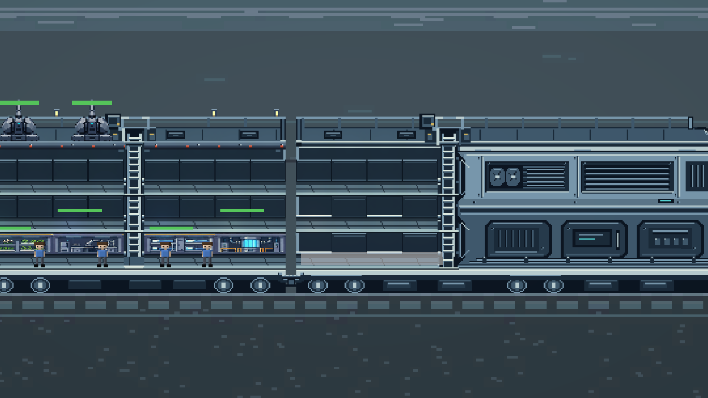

이 문서의 목차
대원 말풍선 · 대화 · 패닉 표현 — 기획안 (2026-09-16 초안) ¶

사용자 지시: "대원들이 어느 정도 스트레스가 쌓이면 대화 말풍선으로 뭘 하고 싶다를 노골적으로 말하게 해줘. 그리고 대화로 스트레스 쌓이는 것과 패닉 같은 걸 더 획기적으로 표현할 수 있을 것 같다. 한번 기획 짜봐라."
상태: P1 구현됨(2026-09-17). 사용자 결정 —
[보내기]버튼 없음 · 클릭 강조 없음 · 나머지(결정 1·3·4·5)는 제안대로. 코드:UI/SpeechBubbleLayer.cs(단계 판정·풀·투영) ·Crew/CrewWants.cs(원인→소원) ·Crew/CrewSpeechLines.cs(대사표). 이벤트 카드 4종(고립·부대낌·출퇴근 불만·연구 지루함) 폐기. P2(패닉 연출·대화·마지막 말)·P3(대화 수치)는 미구현. ⚠️ 2.2 절(클릭·보내기)은 사용자 결정으로 폐기 — 말풍선은 입력을 받지 않는다. 🛑 아래 수치는 전부 초안이다. P3(대화가 수치를 움직이는 단계)는 자동 플레이 4시간 검증 뒤에만 확정한다.
0. 지금 무엇이 문제인가 ¶
스트레스 정보는 이미 정확하다(D04 원인 집계 · D05 경고 휴식). 문제는 보이는 자리다.
| 지금 정보가 있는 곳 | 한계 |
|---|---|
| 대원 정보창 '상승 중 / 과밀 +0.12/초' | 창을 열어야 보인다. 대원이 8명이면 8번 연다 |
좌하단 알림 한 줄(RaiseNotice) |
7초 뒤 사라진다. 누가 어디 있는지는 안 알려 준다 |
이벤트 카드(CrewMBTI.Incident — 고립·부대낌·출퇴근 불만…) |
화면 모서리에 뜬다. 대원 몸과 떨어져 있다 |
| 머리 위 붕괴 원(파랑/빨강) | 이미 늦었다. 그리고 원 하나라 무슨 일인지 안 읽힌다 |
즉 플레이어는 "누가 · 왜 · 뭘 원하는지"를 대원 몸에서 읽지 못한다. 말풍선은 이 셋을 한 문장으로, 그 사람 머리 위에서 말한다.
설계 원칙 (프로젝트 기존 원칙에서 끌어온 것) ¶
- 말풍선은 새 정보가 아니라 기존 정보의 얼굴이다. 원인은
StressLedger가 이미 안다. 대사는 그걸 읽기만 한다. 대사가 원인을 추측하면 D04 가 고친 "거짓 표시"가 말풍선에서 되살아난다. - 요구는 노골적으로, 해결은 플레이어가. 대원은 "모형 조립 부스 가고 싶다"라고 이름을 대고 말한다. 🛑 대원이 스스로 옮겨 가지는 않는다(배치는 결정이다 — 0-K 목표 재고 규칙과 같다).
- 치료가 아니라 예방. 말풍선이 제일 시끄러운 구간은 65~80(요구)이다. 100 이후엔 할 수 있는 게 적으므로 연출은 극적이되 "지금 가면 살린다" 같은 거짓 약속은 하지 않는다(기획서 5.3).
- 소음이 되면 무시된다. 붕괴 경보의 히스테리시스(80 진입 / 60 해제)와 같은 원리로 모든 단계에 문턱 두 개를 둔다. 화면 동시 말풍선에 상한을 둔다.
- 히든 축(A/T)은 말투로 새지 않는다(무전 대사표와 같은 규약). 대사는 4축만 본다. 떨림·크기 같은 연출은 현재 스트레스 값에서 나오지 기질에서 나오지 않는다.
1. 스트레스 단계별 말풍선 — 한눈에 ¶
| 단계 | 스트레스 | 들어감 / 나옴 | 말풍선 | 무엇을 말하나 | 지속 |
|---|---|---|---|---|---|
| ① 안정 | 0~39 | — | 기본 · 흰색 | 잡담(가끔) | 일회성 |
| ② 불편 | 40~64 | 45 / 35 | 기본 · 옅은 호박색 테두리 | 원인 투덜 | 일회성 |
| ③ 요구 | 65~79 | 65 / 55 | 호박색 · 아이콘 + 목적지 이름 · 클릭 가능 | 원하는 것 | 고정(핀) |
| ④ 외침 | 80+ (경고 휴식) | D05 그대로(80·10초 / 60) | 붉은 테두리 · 글자 흔들림 | 한계 선언 | 고정 |
| ⑤ 위기 유예 | 100 (유예 10초) | D05 그대로 | 붉은색 · 꼬리에 줄어드는 링(남은 유예) | 숨 넘어가는 말 | 유예 동안 |
| ⑥-a 무기력 붕괴 | 붕괴 | — | 회색 · 작아짐 · 글자가 흐려지고 끊김 | "……" · 조각난 말 | 붕괴 동안 |
| ⑥-b 방황 붕괴 | 붕괴 | — | 붉은 폭발형(톱니) · 크게 · 떨림 · 글자 깨짐(#) |
비명 · 반복 | 붕괴 동안 |
| ⑦ 진정 | 붕괴 해제 | — | 기본 | 사과 · 멍함 | 일회성 |
2. ③ 요구 말풍선 — "노골적으로 뭘 하고 싶다" ¶
2.1 무엇을 원하는가 = 원인 → 소원 매핑 ¶
StressLedger.TopRisingLabel() 과 같은 방식으로 지금 가장 크게 올리는 원인을 읽고, 그 원인을 푸는 행동을 말한다.
원인이 "휴게실로 풀리는 것"이면 그 대원에게 맞는 휴게실 이름을 댄다(FurnitureTiers.LoungeFits 단일 소스).
최대 상승 원인 (StressCause) |
소원 | 말풍선 아이콘 | 클릭 시 강조 대상 |
|---|---|---|---|
| Isolation (E형 혼자) | 사람 곁 | 사람 둘 | 가장 가까운 대원 |
| Crowding (I형 마주침 3+) | 조용한 자리 | 닫힌 문 | 마주침 0~1 인 가장 가까운 빈 자리 |
| SharedRoom (I형 다인 설비) | 혼자 쓰는 방 | 캡슐 | 캡슐 수면실 / 관측 라운지 / 부스 |
| Exhaustion (에너지 0) | 잠 | 침대 | 지정 침대(없으면 빈 수면실) |
| Commute (J형 4칸+) | 가까운 침대 | 화살표 | 일터에서 가장 가까운 수면실 |
| ResearchBoredom (S형 연구) | 손으로 하는 일 | 렌치 | 재배기·조리대·제작대 |
| Empathy (F형 공감) | 불안한 사람에게서 떨어지기 | 닫힌 문 | 평균 스트레스 낮은 칸 |
| Bereavement (사망 충격) | 애도 | 위령비 | 위령비(있으면) / 맞는 휴게실 |
| LeftBehind (두고 온 동료) | 애도 | 위령비 | 맞는 휴게실 |
| 그 외 · 복합 | 맞는 휴게실 | 그 휴게실 아이콘 | 그 휴게실 슬롯 |
- 맞는 휴게실이 지어져 있지 않으면 지어 달라고 말한다. 이때 이름은 "이 대원에게 맞는 가장 싼 휴게실" (초반엔 부스)이다. → 말풍선이 곧 "뭘 먼저 지을지"의 힌트가 된다(2026-09-06 사용자: "뭘 먼저 만들지 선택하는 게 재미"). 🛑 없는 설비를 "가면 된다"고 말하지 않는다 — 지시대로 해도 아무 일이 없는 대사는 잘못된 규칙을 가르친다.
- 배고픔(
Hunger < 20)은 스트레스 원인이 아니지만 요구로는 말한다(우선순위: 스트레스 요구보다 아래).
2.2 클릭하면 ¶
- 그 대원을 선택하고, 소원 대상(설비·자리·사람)에 시안 외곽선 펄스 2초 — 어디로 옮기면 되는지 보인다.
- 대상이 실제로 쓸 수 있는 자리면 말풍선에
[보내기]버튼 한 줄. 누르면 드래그 배치와 같은 경로(CrewDraggable가 부르는 배치 함수)를 탄다. 🛑 새 배치 경로를 만들지 않는다 — 두 경로가 갈라지면 한쪽만 과밀·정원 검사를 한다. 🛑 자동으로 보내지 않는다. 버튼은 "드래그를 대신 해 주는 손"이지 "알아서 해 주는 AI"가 아니다. - 소원이 이루어지면(휴게실 도착 · 원인 소멸) 짧은 감사 한 줄 → 핀 해제. 🛑 감사에 보상 수치를 붙이지 않는다(생활 목표와 같은 원칙 — 보상이 붙으면 소원이 과제가 된다). 보상은 이미 휴게실 해소량으로 받고 있다.
2.3 E/I 축 = 말풍선 모양 ¶
| ② 불편 · ③ 요구 | ④ 외침부터 | |
|---|---|---|
| E형 | 말풍선(꼬리 있음) — 입 밖으로 말한다 | 말풍선 |
| I형 | 생각 풍선(구름 · 동그라미 꼬리) — 속으로 삼킨다 | 말풍선으로 바뀐다 |
"I형이 입 밖으로 말하기 시작하면 위험하다." 모양 하나로 단계가 한 번 더 읽힌다. 대사표를 늘리지 않고 표현이 두 배가 된다(모양은 코드, 대사는 같은 표).
2.4 대사 — 기질 4군 (무전 대사표와 같은 분류) ¶
규약: NT 건조·계산 / NF 감정이 샌다 / SJ 보고체·절차 / SP 짧고 거칠다.
🛑 이름·장소명 뒤에 받침을 타는 조사 금지(을/를·이/가·은/는·와/과·로/으로). 받침과 무관한 에 / 에서 / … / 쉼표만 쓴다.
요구 — 맞는 휴게실이 있을 때 ({place} = 설비 이름)
| 군 | 예시 |
|---|---|
| NT | "지금 내 효율 반토막이야. {place}에서 머리 식히고 올게." / "{place}. 비어 있잖아. 거기 보내 줘." |
| NF | "나 {place}에 가면 안 될까… 진짜 한계야." / "잠깐만. {place}에서 숨 좀 돌리고 싶어." |
| SJ | "보고. 스트레스 한계 근접. {place} 휴식 요청." / "순서 지키자. 나부터 {place}." |
| SP | "아 몰라, {place} 간다." / "{place}. 지금. 당장." |
요구 — 맞는 휴게실이 없을 때 ({fit} = 가장 싼 맞는 휴게실)
| 군 | 예시 |
|---|---|
| NT | "쉴 데가 없어. {fit} 하나면 계산이 맞아." |
| NF | "여긴 쉴 곳이 하나도 없어… {fit} 같은 거라도 있었으면." |
| SJ | "건의. {fit} 설치 필요." |
| SP | "{fit} 좀 지어. 안 그럼 나 터진다." |
요구 — 원인별 (발췌) | 원인 | NT | NF | SJ | SP | |---|---|---|---|---| | 고독(E) | "혼자선 생각이 겉돈다. 누구 없나." | "아무도 없어? 누구라도 와 줘." | "근무자 추가 요청. 혼자는 비효율." | "심심해 죽겠다. 누구 없냐?" | | 과밀(I, 생각) | "(사람이 너무 많다. 집중이 안 된다.)" | "(조용한 데 가고 싶다…)" | "(동선이 자꾸 겹친다.)" | "(다 좀 비켜.)" | | 고갈 | "눈이 감긴다. 침대 좌표 좀." | "나 쓰러질 것 같아…" | "휴식 시간 초과. 취침 요청." | "잠. 잠 좀." | | 출퇴근(J) | "침대에서 여기까지 몇 칸인지 세어 봤어?" | "매번 이렇게 멀리 오는 거 너무 지쳐." | "출퇴근 거리 과다. 재배치 요청." | — (P형은 면역) | | 연구 지루함(S) | — | — | "이 숫자들 더는 못 보겠다. 손으로 하는 일 줘." | "책상 앞은 질색이야." | | 사망 충격 | "{dead}… 계산에 없었어." | "{dead}… 방금까지 여기 있었는데." | "{dead}… 명단에서 지워야 하나." | "{dead}… 젠장." |
④ 외침 (80+, 경고 휴식) | NT | NF | SJ | SP | |---|---|---|---| | "더는 못 버틴다. 일 멈춘다." | "나 좀 내버려 둬! 제발!" | "…규정이고 뭐고, 쉬어야겠다." | "다 때려치운다!" |
⑤ 위기 유예 (100, 10초) — 전 군 공통 풀 + 군별 1줄 "숨이… 안 쉬어져." / "잠깐, 잠깐만…" / (NT) "뭔가 잘못됐어. 내가." / (SP) "나 지금 이상해."
③~⑤의 감사 / ⑦ 진정 (발췌) 감사: (NT) "…이제 좀 계산이 된다." (NF) "고마워. 진짜로." (SJ) "확인. 회복 중." (SP) "오, 살 것 같다." 진정: (NT) "방금 기록은 지워 줘." (NF) "…미안. 나 이상했지." (SJ) "상황 보고… 할 게 없다." (SP) "뭐야. 내가 뭐 했어?"
3. 패닉 표현 — "획기적으로" ¶
3.1 붕괴 두 유형이 정반대로 보이게 ¶
기존 붕괴는 머리 위 원 색(파랑/빨강)만 달랐다. 이제 말풍선 자체가 두 증상을 연기한다.
| 무기력 (I·T·J 다수) | 방황 (E·F·P 다수) | |
|---|---|---|
| 모양 | 작아지는 회색 말풍선, 테두리가 점선처럼 끊긴다 | 붉은 톱니 폭발형, 평소의 1.3배 |
| 글자 | 한 글자씩 느리게 찍히다 멈춤, 알파가 빠진다 | 빠르게 연달아, 글자 흔들림 + # 깨짐 |
| 대사 | "……" · "의미 없어." · "그냥… 여기 있을래." · 앞선 요구 대사의 조각("{place}… 아니, 됐어.") | "놔! 다 비켜!" · "나가야 돼, 나가야 돼!" · "나#야 #!!" |
| 주기 | 10초에 한 번(사망 사다리 틱과 같은 박자) | 2~3초마다 새 줄 |
| 소리 | 없음(무기력은 조용해야 무섭다) | 기존 warn 신호음 1회(진입 시만) |
- 글자 깨짐은 무전의
ScoutRadioLines.Garble을 재사용한다. 판단력이 무너진 무전과 정신이 무너진 사람이 같은 시각 언어를 쓴다 — 플레이어가#= "정상이 아니다"를 한 번만 배우면 된다. - 무기력의 "요구 조각" 이 핵심 연출이다: 붕괴 직전까지 말하던 소원(부스 이름)을 붕괴 뒤에 흐리게 되뇐다. "그걸 들어줬으면 안 무너졌다"가 대사로 남는다. 🛑 단, "지금 가면 낫는다"로 읽히면 안 된다 → 곧바로 "아니, 됐어."로 끊는다.
- 사망 사다리 틱에 맞춰 말풍선이 한 번 움찔(펄스) 한다. 확률은 안 보여 주지만 "주사위가 굴러간 순간"은 느껴진다.
3.2 주변 대원이 반응한다 — 규칙을 대사로 가르친다 ¶
붕괴 대원 3u 안의 평상시 대원이 한 번씩(대원당 30초 쿨다운) 반응 한 줄을 띄운다.
| 반응하는 사람 | 대사 | 가르치는 것 |
|---|---|---|
| F형 | "야, 괜찮아? …왜 그래!" | F형은 공감으로 같이 오른다(Empathy 원인이 곧 뜬다) |
| T형 | "건드리지 마. 거리 둬." | 방황형 참극은 같은 칸 1명을 데려간다 → 칸에서 빼라 |
| 같은 칸 누구든(방황 대상) | "나 여기 있으면 안 될 것 같은데." | 같은 칸 = 표적 |
🛑 반응은 기존 규칙을 말할 뿐 새 규칙을 만들지 않는다. "건드리지 마"라고 했는데 실제로 거리가 무관하면 거짓말이다. 참극 표적 규칙(
GetRandomCrewInSameCar)이 바뀌면 이 대사도 같이 바꾼다.
3.3 마지막 말 ¶
붕괴 사망(자살·참극) 직전 마지막 말풍선을 1.5초 얼린다(흑백 전환 → 사망 연출).
그 문장을 위령비 명부의 그 사람 칸에 "마지막으로 한 말" 로 남긴다(기존 16종 유언 WailData 와 별개 줄).
→ 세이브에 문자열 필드 1개(MemorialEntry.lastWords). 🔎 결정 필요(5절).
4. 대화 — 두 사람이 마주치면 ¶
지금 마주침(CountCrewNear 3u)과 동료의 안정(COMPANION_CALM)은 숫자로만 돈다.
대화는 그걸 두 사람이 주고받는 말풍선 2~4줄로 보여 준다.
4.1 대화는 주사위가 아니라 상태에서 결정된다 ¶
🛑 "대화했더니 랜덤하게 스트레스 +5"는 금지. 원인을 읽을 수 없고, 읽을 수 없으면 D04 가 무너진다. 두 사람의 지금 상태만 보고 어떤 대화가 될지가 정해진다.
| 종류 | 조건 (둘 다 평상시 · 같은 층 · 2u 안 · 8초 이상 함께) | 모습 | P1·P2 (표현만) | P3 (수치, 🔎결정 필요) |
|---|---|---|---|---|
| 잡담 | 둘 다 < 40 | 흰 말풍선 교대 | 효과 없음(기존 Company/Quiet 가 이미 돈다) | 없음 |
| 하소연 | A ≥ 65, B 는 F형 · < 40 | A 호박색 / B 흰색, B 가 A 쪽으로 몸을 돌림 | 기존 동료의 안정(0.04/s)을 보이게 한다 | A −6 · B +2 (위로는 공짜가 아니다) |
| 말다툼 | 둘 다 ≥ 60, 그리고 둘 중 하나가 Crowding/SharedRoom/Isolation 압박 중 | 붉은 톱니 말풍선이 겹치며 교대, 마지막은 한쪽의 "……" | 표현만 | 둘 다 +4 (신규 원인 Quarrel), 99 상한 |
| 불안 전파 | 한쪽이 ④ 이상, 다른 쪽 F형 | 3.2 반응과 같음 | 기존 Empathy 를 보이게 | 없음 |
| 추모 | 최근 5분 내 사망 · 둘 중 F형 | 조용한 말풍선 2줄, {dead} |
기존 Bereavement 를 보이게 | 없음 |
말다툼 예 (NT ↔ SP)
A: "네 발소리 때문에 집중이 안 돼." B: "그럼 네가 딴 데 가든가." A: "……"
하소연 예 (SJ ↔ NF)
A: "보고할 게 있어. 나 요즘 잠을 못 자." B: "여기 앉아. 잠깐이라도."
4.2 말다툼 안전장치 (P3 을 켤 때) ¶
- 99 상한 —
ShockStress와 같은 규칙. 말다툼만으로는 붕괴하지 않는다. 연쇄(다툼 → 붕괴 → 참극 → 부고 → 다툼)를 끊는다. - 쌍 쿨다운 180초 · 대원 쿨다운 90초 — 같은 두 사람이 3초마다 싸우지 않는다.
- 해법이 항상 있다: 조건이 "2u 안 · 8초 함께"라서 떼어 놓으면 끝난다. 말풍선이 뜬 순간이 곧 "지금 떼어라"다.
- 원인 표시: 대원 정보창에
말다툼 +4 (최근 사건)— 기존 impulse 슬롯을 그대로 쓴다. - 비교: 부스 1곳 해소 = 맞는 대원 1.0/s. 말다툼 +4 = 부스 4초. 하소연 −6 = 부스 6초. 휴게실을 대체하지 못하는 크기다(4.2 D02 원칙).
5. 🔎 사용자 결정이 필요한 것 ¶
| # | 질문 | 제안 |
|---|---|---|
| 1 | 대화(말다툼·하소연)가 실제 스트레스 수치를 움직이게 할 것인가? | P1·P2 는 표현만, P3 에서 켠다. 켜면 자동 플레이 4시간 재검증 |
| 2 | 요구 말풍선에 [보내기] 원클릭 버튼을 둘 것인가? |
둔다. 드래그와 같은 경로로만 |
| 3 | 교전 중에도 말풍선을 띄울 것인가? | 교전 중엔 ①잡담·②투덜·잡담류 대화 끔. ③요구 이상·패닉은 유지 |
| 4 | 붕괴 사망의 마지막 말을 위령비에 남길 것인가? | 남긴다(세이브 필드 1개) |
| 5 | 기존 이벤트 카드 고립 / 부대낌 / 출퇴근 불만 / 연구 지루함 을 말풍선으로 대체할 것인가? |
대체(폐기). 같은 말을 두 곳에서 하면 하나는 소음이다. 경고·붕괴 알림(RaiseNotice)은 화면 밖 대원 때문에 유지 |
6. 소음 제어 — 이게 없으면 기능 전체가 실패한다 ¶
| 규칙 | 값(초안) | 이유 |
|---|---|---|
| 화면 동시 말풍선 | 최대 4 (핀 포함) | 대원 12명이 다 떠들면 자막밭(0-A 절 "자막밭" 사건) |
| 우선순위 | 패닉 > 위기 유예 > 외침 > 요구 > 말다툼·하소연 > 투덜 > 잡담 | 넘치면 낮은 것부터 안 뜬다(대기열 아님 — 버린다) |
| 일회성 표시 시간 | 2.5초 + 글자당 0.06초 (최대 6초) | |
| 잡담 | 대원당 150~240초 · 전역 최소 간격 25초 | |
| 투덜 | 대원당 60초 · 같은 원인 연속 금지 | |
| 요구(핀) | 1개 고정, 문장만 30초마다 변주 | 같은 문장이 5분 떠 있으면 배경이 된다 |
| 줌 아웃 | 말풍선 폭이 화면에서 90px 미만이 되면 아이콘만 남긴다 | |
| 화면 밖 대원 | ③ 이상만 화면 가장자리 핀(아이콘 + 화살표), 클릭 시 카메라 이동 | 보이는 대원만 말하면 제일 위험한 사람이 안 보인다 |
7. 화면 규격 ¶
- 시스템이 말하면 홀로그램, 사람이 말하면 말풍선. 말풍선은 홀로그램 판을 쓰지 않는다 —
크림색 불투명 바닥 + 2px 짙은 외곽 + 픽셀 꼬리. 게임 월드(16px 픽셀아트)의 일부로 보이게 한다.
🛑 얇은 띠 9-slice 함정: 불투명 바탕을 먼저 깔고 테두리를 얹는다(
banner-plate-9slice-trap). - 그리는 곳 = HUD 캔버스(Screen Space-Camera) 의
SpeechLayer— 월드 좌표를 화면으로 투영해 따라간다. 이유: 글자 크기가 화면 픽셀로 고정돼야 읽힌다(체력 바 교훈: 유닛으로 정하면 6px 이 된다). 겹침 회피·화면 가장자리 고정도 화면 공간이 쉽다. ⚠️ 투영은 퍼스펙티브 카메라 기준WorldToScreenPoint(함정 19 — 직교 가정 금지). - 글자 = Malgun SDF 15pt, 최대 폭 220px, 최대 2줄, rect 높이 ≥ 폰트 × 1.5 ·
Overflow(함정 11). 이모지·✕·🔒금지(두부) → 아이콘은UiIconLibrary. - 머리 위 층: 대원 스프라이트 상단 1.25 → 체력 띠 1.31~1.57 → 붕괴 원 1.90 → 말풍선 꼬리 끝 2.10. 붕괴 중에는 말풍선이 붕괴 원을 대체한다(색이 같은 말을 하므로 둘 다 띄울 필요가 없다).
- 개체별 UI 규칙: 말풍선 10개를 미리 만들어 풀로 두고 토글만 한다. 이벤트마다 생성·파괴 금지.
8. 구현 설계 ¶
| 파일 | 역할 |
|---|---|
Crew/CrewSpeech.cs (신규, 대원 루트) |
단계 FSM(히스테리시스) · 0.5초 틱으로 CrewStats·MentalBreakdown·StressLedger 를 읽는다 · 쿨다운 |
Crew/CrewWants.cs (신규, static) |
원인 → 소원 → 대상 조회(TrainGrid.FindLoungeSlot · FurnitureTiers.LoungeFits) · "가장 싼 맞는 휴게실" |
Crew/CrewSpeechLines.cs (신규, static) |
대사표 — 상황 × 기질 4군 × 변주. ScoutRadioLines 와 같은 규약(직전 줄 회피 · Garble 공유) |
Crew/EncounterTalk.cs (신규, static + 러너) |
1초 틱, 대원 쌍 훑기(n ≤ 16 이라 O(n²) 무방) · 대화 종류 판정 · 쌍 쿨다운 |
UI/SpeechBubbleLayer.cs (신규) |
풀 10 · 화면 투영 · 우선순위 컷 · 겹침 시 위로 쌓기 · 가장자리 핀 · 클릭(ClickSink 규약) |
Crew/StressLedger.cs |
P3 에서만: StressCause.Quarrel, Consolation 끝에 append + CAUSE_COUNT 16→18 + Label |
Crew/CrewMBTI.cs |
결정 5 승인 시 Incident 4종 제거 |
Crew/MentalBreakdown.cs |
사다리 틱을 이벤트로 노출(펄스 연출용) · 사망 직전 마지막 말 훅 |
규칙 체크
* 🛑 static(EncounterTalk 쿨다운 표 · CrewSpeechLines._last · 레이어 캐시)은 전부 ResetStatics.
GameEvents 에 이벤트를 추가하면 ResetAllSubscriptions 목록에도 추가.
* 🛑 Update 안 문자열 연산 금지 — 대사는 단계가 바뀔 때 한 번 조립하고 캐시한다. 투영·흔들림만 매 프레임.
글자 흔들림은 TMP 정점 배열을 캐시해 오프셋만 쓴다(할당 0).
* 🛑 기능을 만들면 봇도 — AutoPlayDirector 는 말풍선을 누를 필요는 없지만(배치는 기존 경로로 이미 한다),
AutoPlayReporter 에 단계별 말풍선 발생 수/분 · 동시 표시 최대치 · 컷된 수를 기록한다. 소음 규칙의 검증 수단이다.
* 세이브: P1·P2 는 필드 0개(쿨다운은 휘발). 결정 4 승인 시 위령비 lastWords 1개.
9. 단계 계획 ¶
| 단계 | 내용 | 수치 변화 | 검증 |
|---|---|---|---|
| P1 | 단계 ①~④ 말풍선 · 요구 소원 매핑 · 클릭 강조/[보내기] · 소음 제어 · 이벤트 카드 4종 정리 |
없음 | 스트레스를 execute_code 로 40/65/80/55/35 로 밀어 단계 진입·해제 확인 · 30분 자동 플레이 말풍선/분 · 스크린샷(체력 띠·지붕 포탑과 겹침) |
| P2 | 위기 유예 링 · 붕괴 두 유형 연출 · 주변 반응 · 진정 · 마지막 말 · 대화(표현만) | 없음 | 붕괴 강제 진입 두 유형 스크린샷 · Play 두 번 → 구독 수 불변 |
| P3 | 말다툼·하소연 수치 켜기 | 있음(초안 §4.2) | 자동 플레이 4시간 — 사망 수·붕괴 수가 P2 대비 악화되지 않는지 · 말다툼 99 상한 로그 |
P1 만으로도 사용자 요청의 첫 문장("뭘 하고 싶다를 노골적으로")은 끝난다. P2 가 "패닉을 획기적으로", P3 가 "대화로 스트레스 쌓이는 것"이다.